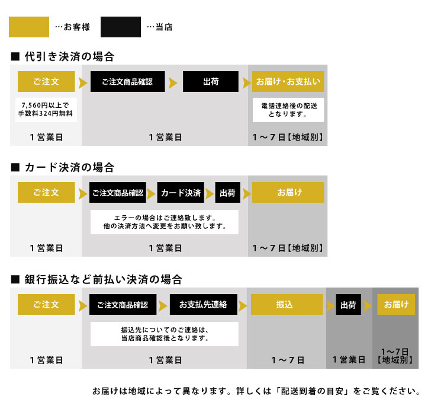
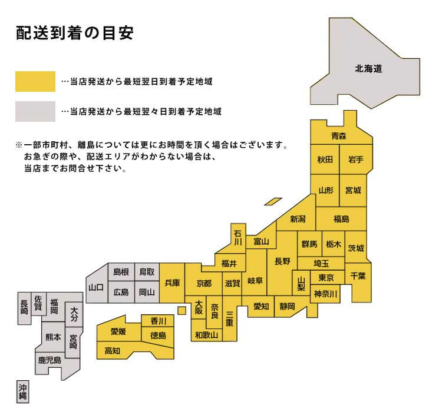
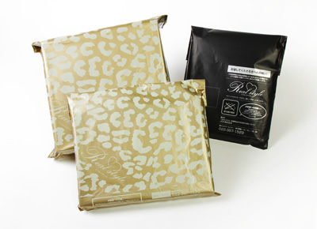
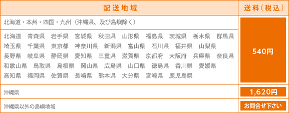
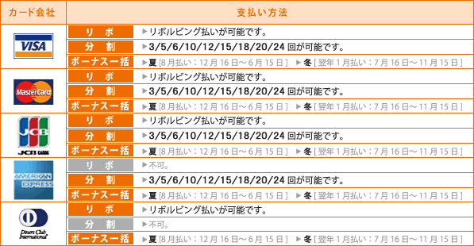
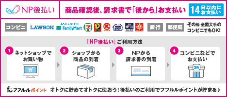
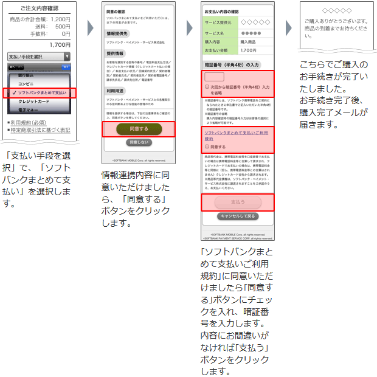

ご注文について
|
|
返品・交換について
|
お支払いについて
|
|
配送・送料・手数料について
|
ラッピングについて
|
|
取扱い状況について
|
よくあるご質問
|
|
納品書について
|
当サイトについて
|
|
お問合せ
- お電話でのご連絡 TEL 022-387-1523 / 022-200-7171
- メールでのご連絡 ruckruck@joknet.jp
- 営業時間：10:00～17:00（土日祝を除く）
- ※出荷作業は土日祝日も休まず行っております
|
ご注文から到着までの流れ
ご注文商品が欠品の場合、下記スケジュールでの配送が出来かねますので、お急ぎの場合はメールまたはお電話にてご確認下さい。
3営業日以上経っても、当店から連絡がない場合、大変申し訳ございませんが、当店までお電話にてご連絡ください。
また、ご注文時のメールアドレスをお間違いになられていた場合もメールが届きません。お手数ではございますが今一度ご確認ください。
※：振込先についてのご連絡は当店商品確認後の連絡となります。
【携帯電話でご注文のお客様へ】
ご注文頂きますと、ご連絡メールをお届けしております。
メールが届かない場合は、メール受信(許可/拒否)設定により、気づかないうちにメールを受信拒否されているか、または、メールアドレスの入力ミスが理由として考えられます。
携帯電話の場合、迷惑メール防止の為にパソコンからのメールを受信しない機能がついております。
その機能が有効な場合、弊社より送りましたメールが受信拒否されまして、購入のご案内メールをお届けできなくなりますので、解除お願いいたします。

配送到着の目安
商品のお引渡し時期
■銀行振込・コンビニ前払⇒ ご入金確認後、3営業日以内に商品を発送致します。
■クレジット決済・代金引換・NP後払い ⇒ ご注文確認後、3営業日以内に商品を発送致します。
■メール便 ⇒ ご注文確認後、3営業日以内に商品を発送致します。
ご利用地域により、商品の到着は発送から約1週間前後となります。
※代金引換便はメール便不可。

■カスタマーセンター
お電話でのご連絡 TEL 022-387-1523
メールでのご連絡 ruckruck@joknet.jp
営業時間：10:00～17:00（土日祝を除く）
※出荷作業は土日祝日も休まず行っております
配送について
通常、日本郵便にて発送いたします。
※中国・九州地方(沖縄を除く)は佐川急便での発送となります。
メール便の扱いは対象商品のみとなっております。詳しくは下記の【メール便について】をご参照ください。
【業者】日本郵便（通常）
※中国・九州地方(沖縄を除く)は佐川急便での発送となります。
※発送業者はお選びいただけません。予めご了承ください。
【備考】商品のお引渡し時期
■銀行振込・コンビニ前払⇒ ご入金確認後、3営業日以内に商品を発送致します。
■クレジット決済・代金引換・NP後払い ⇒ ご注文確認後、3営業日以内に商品を発送致します。
■メール便 ⇒ ご注文確認後、3営業日以内に商品を発送致します。
ご利用地域により、商品の到着は発送から約1週間前後となります。
※代金引換便はメール便不可。
※営業所止めはお受けできかねます。
※海外発送のご注文はお受けしておりません。

▲当店はゴミの少ないエコ梱包でお届けしております。
大きな商品(マチのあるバッグ等)に関しては段ボールを使用して発送いたします。
※配送に関しては「ECLogi」にて行っております。
メール便について
【対象商品について】
メール便の扱いは対象商品のみとなっております。
対象商品には【メール便】と商品ページに記載されております。
【メール便】記載の無い商品（対象商品以外）に関してのメール便発送は商品のサイズや重さに関わらず、
当店システム上、お受け出来ませんのでご了承下さいませ。
【メール便同梱について】
メール便対象商品4点以上のご購入の場合、通常便送料無料（沖縄・一部地域を除く）にてお送り致します。
メール便対象商品とメール便以外（通常商品）を、一緒にご購入頂いた場合、
（一部の商品を除き※1，参照）は、送料無料のメール便にて発送させて頂く場合がございます。
商品のサイズにより、宅配便での発送と当店が判断した場合につきましては、
送料無料にて宅配便発送致します。
沖縄・離島・島嶼等で4点以上で追加送料が発生してしまう場合、その際はお客様に発送前に確認のご連絡をさせて頂きますが、
メール便対象商品のみでのご注文の頂いている場合は、メール便複数にてお送りさせて頂くことがございます。
【メール便の支払い方法について】
※代金引換便はメール便不可。
前払いの場合は、振込み金額振込先をご連絡をさせて頂き、
ご入金確認、ご注文確認完了後（※2）、3営業日以内に商品を発送致します。
カード決済の場合は、ご注文確認完了後（※2）、3営業日以内に商品を発送致します。
商品の到着は発送からご利用地域により約１週間前後となります。
※1，メール便との同梱について、一部、メール便同梱不可能商品が御座います。
メール便同梱不可商品に関しては、【メール便同梱不可】と記載が御座います。
メール便同梱不可商品とメール便対象商品を一緒にご購入頂いた場合は通常便での出荷となり、送料が540円(一部地域を除く)発生致します。
注文直後に配信される自動配信メールにて記載されている金額を訂正して再度、当店から確認メールを送信させていただきます。
※2，予約商品やメーカー在庫で入荷が遅れてしまっている場合は、商品入荷後の発送となります。
商品の配送に関しては、ご注文確認後、メールにてご案内させていただきます。
【発送後について】
発送後のお届け先の変更はできません。
尚、発送中の紛失、破損、遅延等について配送業者、当店では一切保障致しかねます。
またこれらの原因についての返金、交換は対応できかねますので、予めご了承ください。
送料・代引き手数料について
■送料は、540円(一部地域を除く)。詳しくは下記をご参照ください。

■代引き手数料は、別途一律324円（税込）を頂戴いたします。
■送料別の商品 ⇒ 商品価格に送料が含まれていないもので、かつ商品ページで個別に送料が設定されていない商品。
■送料込の商品 ⇒ 商品価格に送料が含まれているもの。商品ページで個別に送料が設定されている商品を含みます。
★今だけ！お買い上げ(税込)7,560円以上で『送料無料』★
★お買い上げ(税込)7,560円以上で『代引き手数料無料』★
| 高額購入割引特典 |
1配送先につき、合計7,560円以上ご注文いただいた場合、送料が0円になります。
|
| まとめ買い時の扱い |
1配送先につき、送料別の商品を複数ご注文いただいた場合、 送料は上記料金表1個分送料になります。
送料別の商品と送料込の商品を同時にご注文の場合は、以下の送料込商品の扱いもご参照ください。
|
| 送料込商品の扱い |
1配送先につき、送料込の商品と送料別の商品を同時にご注文の場合、送料は上記料金表に関係なく送料無料になります。ただし、商品ページで個別に送料が設定されている商品がある場合は、その送料×個数分は必要になります。
|
| 送料分消費税 |
この料金には消費税が含まれています。
|
| 発送業者について |
【発送業者】日本郵便
※中国・九州地方(沖縄除く)は佐川急便での発送となります
|
| メール便について |
メール便の扱いは対象商品のみとなっております。
対象商品には【メール便】と商品名に記載されております。
【メール便】記載の無い商品(対象商品以外)に関してのメール便発送は、商品のサイズや重さに関わらず、当店システム上、お受け出来ませんのでご了承下さいませ。
|
| 備考 |
北海道・本州・四国・九州の島嶼地域（離島地域）の送料は1,080円となります。
| 島嶼地域（離島地域）、沖縄県の高額割引特典について |
北海道・本州・四国・九州の島嶼地域
（離島地域） |
通常送料1,080円から540円割引…540円 |
| 沖縄県 |
通常送料1,620円から540円割引…1,080円 |
|
納期について
納期の目安に関しましては在庫があるものに関しては【あすつく】と表示がされています。
表記がないものは新商品や入荷予定になっているものになります。
入荷予定時期は、商品ページのプルダウンなど詳しい納期が記載されていますのでそちらをご確認ください。
【発送後のお届けまでの目安】
メール便の場合、発送から1週間前後
宅配便の場合、発送から3日前後
商品によってはそれ以上かかるものもございますのでお急ぎの場合はカスタマーセンターまでお問い合わせください。
お電話でのご連絡 TEL 022-387-1523
メールでのご連絡 ruckruck@joknet.jp
営業時間：10:00～17:00（土日祝を除く）
※出荷作業は土日祝日も休まず行っております
※年末年始・GW・シルバーウィーク・お盆期間中に関しましては各メーカーがお休みになっているため商品の配送が遅れる場合がございます。
予約商品に関しては予約販売と記載がございます。
予約商品に関しましては商品ページのプルダウンなど詳しい納期が記載されていますのでそちらをご確認ください。
【メーカー直送】の商品納期に関して
【メーカー直送】となっている商品は、商品の大きさやメーカーの在庫状況により、メーカーからお客様に直接お送りする商品となっております。
メーカーからの直送にて、他の商品と同梱不可となっておりますので、ご了承くださいませ。
また、在庫の確認は随時行っておりますが、メーカーでの欠品により商品を、ご用意できない場合もございますございます。
納期に関してはご注文から平日営業日(土日・祝祭日を除く)で約2～7日程度かかります。
詳しくはご注文確認後にメールにて、ご連絡致します。
※メーカー直送商品に関しては、代引きでのお支払ご利用できませんので予めご了承くださいませ。
お支払い方法について
営業日以内にメールでの注文確認連絡が無い場合は
お手数をおかけ致しますが、お電話にてご連絡下さいませ。
※メール連絡が無い場合、「joknet.jp」のドメイン指定解除をお願いいたします。
特にhotmail・MSM・yahoo等のフリーメールにてのご登録のお客様は
「迷惑メールフォルダ」に確認メールが振り分けられる場合もございます。
問い合わせのご確認の返信は当日16時までとなっております。
16時以降のメールの返信は翌営業日に順次返信させて頂いております。
注文混雑時や問い合わせが殺到している場合は返信が遅れる場合もござますので予めご了承下さいませ。
ドメイン指定解除方法はこちらをご参考下さい。
クレジットカード
●取り扱いカード

【備考】
・上記のクレジットカードがご利用可能となっております。
・すべてのカード会社で、一括払いが可能となっております。
・お支払い総額は以下の通りです。
商品代金合計＋送料（別途手数料はいただきません。）
・当店ではセキュリティ上の配慮からクレジットカード利用控は原則としてお送りしておりません。カード会社から送付されますご利用明細をご確認ください。
なお弊社ではＳＳＬというシステムを利用しておりますので、カード番号は暗号化されて送信されます。ご安心ください。
代金引換
【業者】日本郵便
※中国・九州地方(沖縄を除く)は佐川急便での発送となります 。
【備考】
●お支払総額は以下の通りです。
商品代金 ：商品代金合計＋送料＋代引手数料
代引手数料：一律税込￥324
※ポイントをご利用の場合等、楽天から自動で配信される 確認メールの金額と異なる場合がございます。
のちほど当店からお送りするメールをご確認の上、お手続きください。
●代金は商品配送時に配送員にお支払い下さい。
【代引手数料料金表】 全国一律料金： 324円
NP後払い
商品の到着を確認してから、「コンビニ」「郵便局」「銀行」で
後払いできる安心・簡単な決済方法です。請求書は、商品とは別に
郵送されますので、発行から14日以内にお支払いをお願いします。
【備考】
●お支払総額は「商品代金合計＋送料＋手数料(205円)」となります。
●後払いのご注文には、株式会社ネットプロテクションズの提供する
NP後払いサービスが適用され、サービスの範囲内で個人情報を提供し、
代金債権を譲渡します。
●ご利用限度額は累計残高で54,000円（税込）迄です。
●ご利用者が未成年の場合、法定代理人の利用同意を得てご利用ください。
●「あすつく」対象外です

詳細については
≫こちらからご確認いただけます。
Yahoo!マネー/預金払い
「Yahoo!マネー」は、1円単位でお買い物に利用できる電子マネーです。
チャージは預金払いに対応している口座から行うことができます。
「預金払い」は、銀行などの預金残高を利用して手数料無料で支払いができます。
Yahoo!マネー/預金払いのご利用方法、詳細は【こちら】をご確認ください。
●「あすつく」対象外です
ソフトバンクまとめて支払い
Yahoo!ショッピングのお買い物代金を月々の携帯電話やスマートフォンのご利用料金と一緒にお支払いいただけます。
【備考】
●1回あたりのご利用限度額は50,000円以下です。
●ご利用にはMy SoftBankへの登録が必要です。
●ご注文確定後「ソフトバンクまとめて支払い」へアクセスし、お支払いを完了させてください。
●お支払い手続きは、ご注文後日お送りいたします「お支払い方法のお知らせ」メールから「お支払いURL」ヘアクセスしお手続きをお願い致します。
●7日以内にご入金のない場合、ご注文はキャンセルとさせていただきます。
●お支払い期限を過ぎますと、上記「お支払いURL」でのお支払いができなくなります。お早目の手続きをお願いいたします。
お支払い方法については≫こちらからご確認いただけます。

領収書について
領収書をご希望の場合はメール、もしくはご注文時に備考欄へ「領収書希望」と記載し、宛名と但書をご入力下さい。
当店では電子領収書(PDF形式）を発行しております。
手書きの領収書をご希望の場合は「手書き領収書希望」とご記載くださいますようお願い致します。
※電子領収書はご登録のアドレスへお送りさせて頂きます。
当店からメールを受け取れるようドメイン設定のご確認をお願い致します。
※手書き領収書は宅配便発送の場合は商品と同梱、メール便発送の場合は別送となりますので予めご了承下さいませ。
消費税について
| 消費税率 |
8% |
| 消費税計算順序 |
1商品毎に消費税計算 |
| 1円未満消費税端数 |
切り捨て |
クーリングオフについて
クーリングオフは、訪問販売などに適用される制度で、通信販売での適用義務はございません。
当店は、お客様ご自身の意思で判断し、購入の詳細内容を把握・確認頂ける通信販売のためクーリングオフ制度は適用されません。
返品をご希望の場合
当店では返品を承っております。
ただし、以下の場合は返品を承ることはできませんので必ずご確認ください。
【ご返品お受けできない場合】
・お届けから8日以上経過した商品
・お客様が一度ご使用になられた商品
・お客様が汚損・破損された商品
・商品の箱・説明書・タグ等を汚損・破損・紛失・破棄された場合
・お客様が加工された商品、お届け後、修理、クリーニング等された商品
・その他各商品掲載ページにご返品をお受け出来ない旨記載があるもの
・共同購入・オークションにてお買い上げいただいたもの。
・商品に返品不可の表記がある商品
▼注意点
返品の際は、到着から7日以内に必ず当店までご連絡お願い致します。
ご連絡なく商品を返送いただいた場合、対応いたしかねます。
ご連絡後、当店から改めて返品のご案内を差し上げますので
ご案内に沿って返送いただきますようお願いいたします。
なお、当店からのご案内以外の方法で返送された場合は、一切の対応ができかねますのでご了承ください。
万が一、当店からのメール返信がご確認できない場合は、システムエラーが考えられます。
お手数ですが、再度メールまたはお電話にてご連絡をお願い申し上げます。
返品にかかる送料はお客様のご負担となります。
返品の場合、送料・代引き手数料は返金できません。
購入特約による送料無料は、キャンセルとなった場合無効になる為、手数料を差し引いた金額を返金します。
ラッピングサービスをご利用の場合、ラッピング代金は返金致しませんので予めご了承くださいませ。
▼返金について
返金はお支払い方法により以下の方法にてご返金いたします。
・クレジットカードの場合
クレジットの金額修正にてご返金を行います。
なお、初回発送分の送料はお客様負担となりますので540円の請求をさせていただきます。
・代引き・銀行振込・コンビニ払いの場合
ご返金の口座をお知らせいただきましたら、返金いたします。また返金事務手数料として 500円頂戴しております。
ご請求金額合計－代引き手数料324円－送料540円－返金事務手数料500円＝返金金額
・NP後払いの場合
ネットプロテクションズより発行の請求書ではお支払頂けませんので、当店の口
座へのお振込みをお願い致します。
商品の当店への到着確認、及び送料・手数料のお振込みの確認が取れ次第、NP後
払いの取り消しを行ないます。
初回発送時送料540円+請求用紙発行手数料205円＝お振込金額
------
■カスタマーセンター
ruckruck@joknet.jp
■交換・返品商品の発送先
〒980-0014
宮城県仙台市青葉区本町1-13-22-1F
Ｊ・Ｏ・Ｋ株式会社 カスタマーセンター
お電話でのご連絡 TEL 022-387-1523
メールでのご連絡 ruckruck@joknet.jp
営業時間：10:00～17:00（土日祝を除く）
※出荷作業は土日祝日も休まず行っております
交換をご希望の場合
当店では交換を承っております。
ただし、交換にかかる往復の送料はお客様のご負担となります。
また、以下の場合は交換を承ることはできませんので必ずご確認ください。
【交換をお受けできない場合】
・お届けから8日以上経過した商品
・お客様が一度ご使用になられた商品
・お客様が汚損・破損された商品
・商品の箱・説明書・タグ等を汚損・破損・紛失・破棄された場合
・お客様が加工された商品、お届け後、修理、クリーニング等された商品
・その他各商品掲載ページにご返品をお受け出来ない旨記載があるもの
・共同購入・オークションにてお買い上げいただいたもの。
・商品に交換不可の表記がある商品
▼注意点
交換の際は、到着から7日以内に必ず当店までご連絡お願い致します。
ご連絡なく商品を返送いただいた場合、対応いたしかねます。
ご連絡後、当店から改めて返品のご案内を差し上げますので
ご案内に沿って返送いただきますようお願いいたします。
なお、当店からのご案内以外の方法で返送された場合は、一切の対応ができかねますのでご了承ください。
万が一、当店からのメール返信がご確認できない場合は、システムエラーが考えられます。
お手数ですが、再度メールまたはお電話にてご連絡をお願い申し上げます。
ラッピングサービスをご利用の場合、ラッピング代金は返金致しませんので予めご了承くださいませ。
▼
交換送料のご負担について
交換の場合、当店⇒お客様分の送料を以下の方法で頂戴しております。
・クレジットカード払いをご利用の場合、クレジットカードのご請求へ送料540円を加算させて頂きます。
・他のお支払方法をご利用の場合は、当店の口座へのお振込み、又は代金引換にてお支払頂きます。
なお、代金引換の場合は代引き手数料324円＋送料540円のお支払となります。
------
■カスタマーセンター
ruckruck@joknet.jp
■交換・返品商品の発送先
〒980-0014
宮城県仙台市青葉区本町1-13-22-1F
Ｊ・Ｏ・Ｋ株式会社 カスタマーセンター
お電話でのご連絡 TEL 022-387-1523
メールでのご連絡 ruckruck@joknet.jp
営業時間：10:00～17:00（土日祝を除く）
※出荷作業は土日祝日も休まず行っております
不良品が届いた場合
申し訳ございませんが1週間以内に当店までご連絡くださいませ。
------
■カスタマーセンター
ruckruck@joknet.jp
■交換・返品商品の発送先
〒980-0014
宮城県仙台市青葉区本町1-13-22-1F
Ｊ・Ｏ・Ｋ株式会社 カスタマーセンター
お電話でのご連絡 TEL 022-387-1523
メールでのご連絡 ruckruck@joknet.jp
営業時間：10:00～17:00（土日祝を除く）
※出荷作業は土日祝日も休まず行っております
ラッピングについて
ご注文の商品を当店の専門スタッフがお包みして、ご指定のお届け先にお届けする有料サービスです。
お客様ご自身でお包みご希望の場合、ご注文商品とラッピング材を同梱してお送り致します。
【料金】
100円(1包装につき)
「ラッピングサービス」
≪ご利用はコチラから≫
※無料ラッピングは承っておりませんので、予めご了承ください。
※お客様都合での返品・交換の場合、ラッピング代金は返金致しませんので予めご了承くださいませ。
欠品について
ご注文頂きました商品が下記の事由により、「欠品」「在庫切れ」が発生する場合がございます。
●当店では在庫をメーカーと共有して販売しております。メーカー在庫はできる限り反映しておりますが在庫の連絡もしくは在庫反映が遅れてしまい、行き違いにて販売された場合。
●配送業務中に商品に何らかの不備（不良）などが発見され、当店及びメーカーともに在庫がない場合。
上記の内容が発生した場合、誠に恐れ入りますがお客様にご連絡させて頂き、キャンセル処理などをさせて頂く場合がございます。
当店から欠品時ご連絡させて頂きますが、お客様とのご連絡が7営業日以上取れなかった場合は、ご注文をいったんキャンセルとさせていただきますので何卒ご理解頂けますようお願い致します。
注文のキャンセルについて
・ご注文のキャンセルについて
ご注文確定後の注文内容の変更、キャンセルはお受けできませんので、ご了承くださいませ。
返品扱いとなってしまいますのでご注意ください。
納品書について
当店では下記の場合、納品書を同封せずにお送りしております。
・ご注文者様とお届け様先のお名前が異なる場合
納品書ご希望の場合は、メールにてPDF形式でお送り致します。
お手数をお掛けいたしますが、ご氏名、ご連絡先をカスタマーセンターまでご連絡下さい。
● カスタマーセンター
お電話でのご連絡 TEL 022-387-1523
メールでのご連絡 ruckruck@joknet.jp
営業時間：10:00～17:00（土日祝を除く）
※出荷作業は土日祝日も休まず行っております
個人情報の取扱いとセキュリティについて
お客様との取引の中で得た個人情報（住所、氏名、E-mail、ご購入商品など）を裁判所・警察機関など、公共機関からの提出の要請があった場合以外の第三者に譲渡することは一切ございません。
ご利用環境について
当サイトで快適にお買物をしていただくために、お使いのブラウザの環境設定をしていただくことをおすすめいたします。
◇推奨する設定
・JavaScriptを有効にする
・推奨ブラウザの使用
・Cookie利用を有効にする
・スタイルシートを有効にする
・SSLを有効にする
◇当サイトはこれらのブラウザで動作確認しております。
Windows ： Internet Explorer 11、Fireefox 56.0.1、Google Chrome 62.0、Netscape Navigator 7.1以上
Mac ： Internet Explorer 5.1、Netscape Navigator 7.1以上
※MACでのInternet Explorerは一部、正常に表示されない場合があります。ご了承ください。
商品画像について
・商品の画像は、できるだけ商品に近いカラーにて、掲載をしておりますが実際のカラーと多少誤差が生じる場合があります。
・ご覧になられるパソコン機器及びモニタにより若干差異が生じる場合がございます。
・屋外での撮影画像は、多少実際のカラーと異なる場合がございます。カラーは各商品の「カラーバリエーション」の商品写真をご参考下さい。また、ご心配等ございましたら、お気軽にお問い合わせください。
REAL STYLE(リアルスタイル)を装った、偽サイトにご注意ください。
この度、当店と類似した名称や、当店を装った偽サイトが開設されていることが判明いたしました。
実在するショッピングサイトに似せた偽サイトを開設し、購入者に偽商品を送付する又は代金を詐取するという手口が多発しています。
被害例：インターネットショッピングでブランド品を購入したが、商品が届かないため、
サイトに記載されている販売業者の連絡先に問い合せたところ、当該サイトは販売業者が構築したものでなく、偽サイトであった。
お客様におかれましては、当店を装った偽サイトでのお買い物には十分ご注意ください。
何かご不安な点などございましたら、お問い合わせ下さい。
※ご連絡は下記メールアドレスもしくはお電話にて承ります。
お電話でのご連絡 TEL 022-387-1523
メールでのご連絡 ruckruck@joknet.jp
営業時間：10:00～17:00（土日祝を除く）
※出荷作業は土日祝日も休まず行っております
お買いもの前にお確かめください。
偽サイトはサイトページデザインや商品画像等を、そのままコピーして使用しておりますが、当店とは一切関係ございませんので、ご注意ください。
|